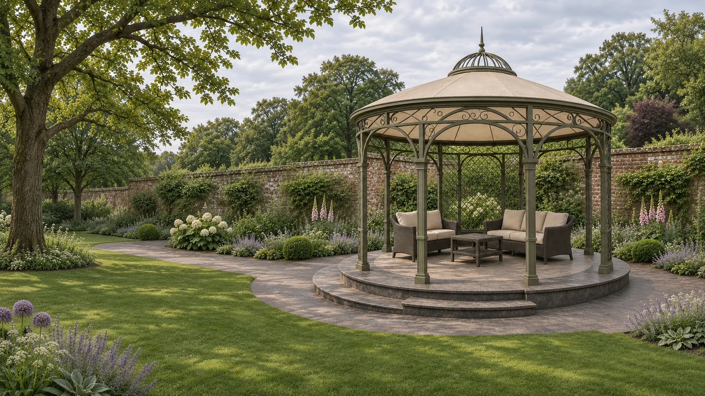
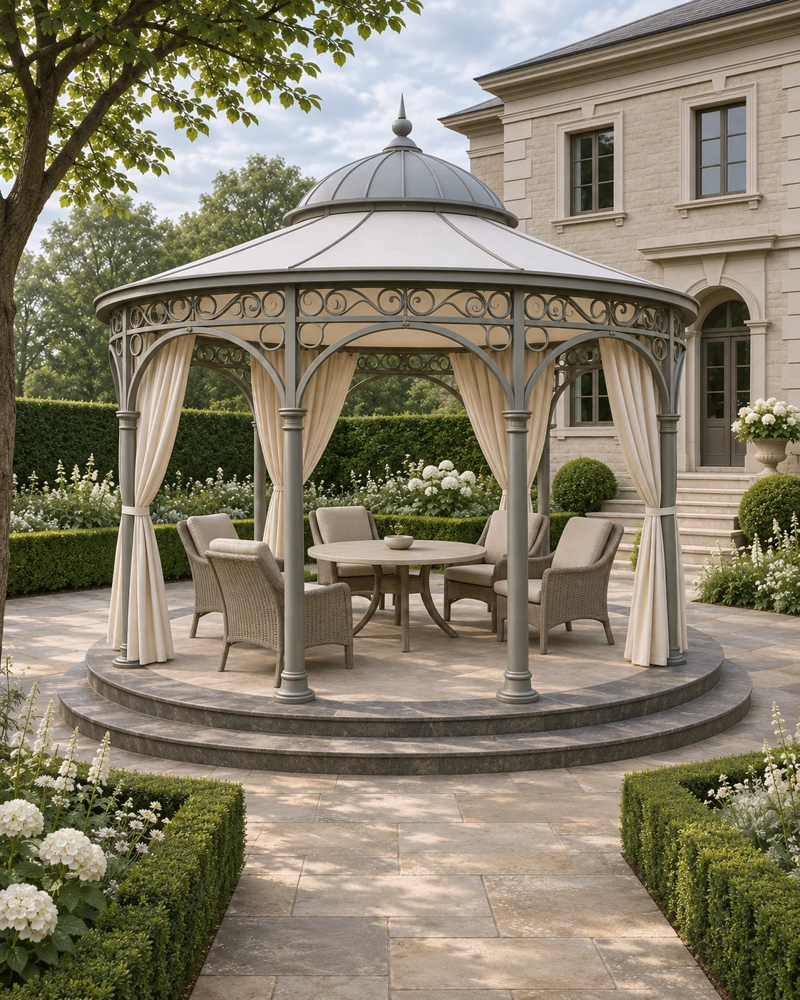

Open lattice or covered canopy
An open ornamental dome defines a silhouette without a continuous roof covering. A canopy creates a different degree of shelter. Establish the weather protection required before selecting the construction.

A place to gather in the garden
Design visualisation
Marla Garden · London
Make the garden a destination with a gazebo shaped around the way you want to spend time outside. Explore ornamental open domes, covered circular canopies and softly enclosed seating with fabric panels.
Begin with the place and the purpose: a quiet seat at the end of a path, an outdoor dining setting or a gathering point within the planting. The roof form, degree of enclosure and approach should follow that intended use.
An open ornamental dome defines a silhouette without a continuous roof covering. A canopy creates a different degree of shelter. Establish the weather protection required before selecting the construction.
A circular layout encourages views in every direction. Consider furniture, circulation and the position of the entrance together.
Compare pale, dark and green finishes against the house, paving and mature planting. The roof height and decorative pattern should belong to the scale of the garden.
Access, ground conditions, foundations, drainage and any permissions need to be reviewed for the actual site. Confirm the proposed scope and responsibilities before work begins.
Explore the collection
Compare roof forms, glazing patterns and the relationship to the garden. Open a design to explore its details and reference views.
 Ornamental Gazebos
Ornamental GazebosDesign collection
An open ornamental dome gives this family its silhouette. Curved ribs and decorative scrollwork create a roof outline through which the garden remains visible.
Explore the design Ornamental Gazebos
Ornamental GazebosDesign collection
A circular garden setting beneath a shaped canopy. Slender posts, a decorative perimeter and open sides keep the view through to the surrounding planting.
Explore the design
Ornamental GazebosDesign collection
Light fabric panels soften the edge of a circular covered gazebo. The seating sits within a defined garden room while the open bays retain views across the planting.
Explore the designDevelop your project
Compare garden structure designs and bring your preferred references to the design discussion.
Compare an enclosed glass garden pavilion before deciding on the level of enclosure.
Our design process begins with the setting, intended use and practical requirements.
Share the setting and your preferred direction to discuss your garden project.
Planning your space
The gazebos in this collection have open sides or a light fabric enclosure. A glazed pavilion forms a separate enclosed room. Choose around the intended use and level of shelter, then define the specification.
Yes, an open lattice dome is a design direction in the collection. Review the decorative pattern, entrance and footprint, and discuss whether you want the structure to remain open or require a separate covering.
Share photographs, an approximate footprint, the postcode and the way you want to use the gazebo. Include any model references from the gallery that help explain your preferences.
Your next space
Share the setting, the way you want to use the space and the designs you are drawn to.
Plan your project